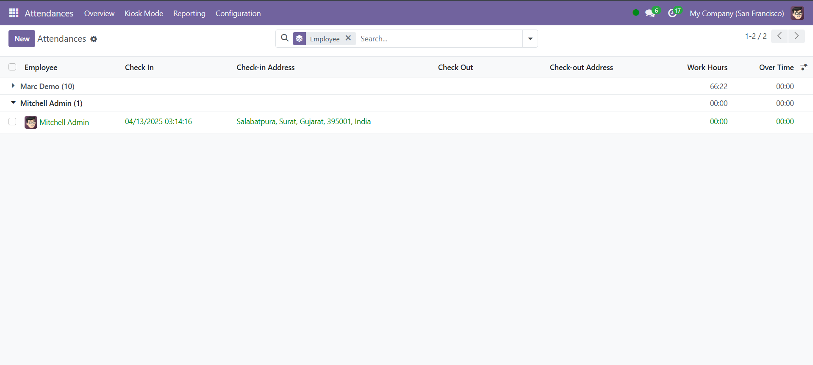
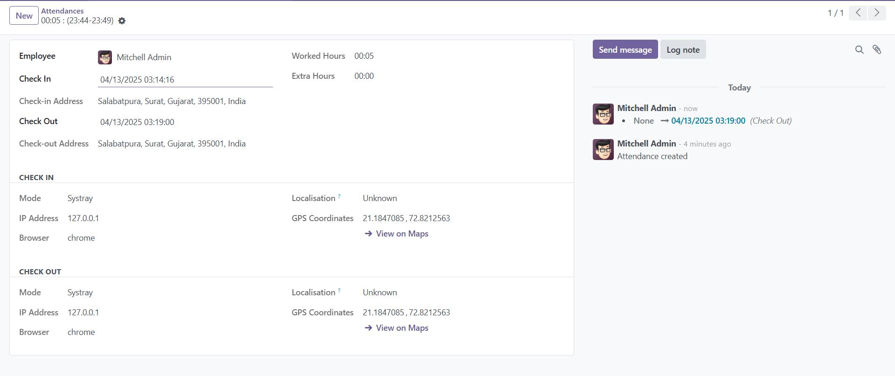

Automatically capture and store the user's check-in and check-out location in the HR Attendance module. A perfect solution to enhance attendance tracking with real-time location accuracy.
Discover what makes Automatic Fetch Attendance Location a must-have module for your HR management.
Automatically captures user’s location on check-in and check-out with precision.
Check-in and check-out addresses are easily viewable in the attendance dashboard.
Fully compatible with both desktop and mobile environments.
No user effort required — location is captured automatically and instantly.
Effortlessly integrates with Odoo’s native HR Attendance system.
Increases employee transparency and builds trust in time tracking.
Designed for simplicity and ease of use by employees and HR staff.
Optimized to fetch data quickly without compromising system performance.
Easily view the address where check-ins and check-outs were made — directly from the attendance screen.
When a user checks in or checks out, their current location is automatically fetched and stored with the log.
